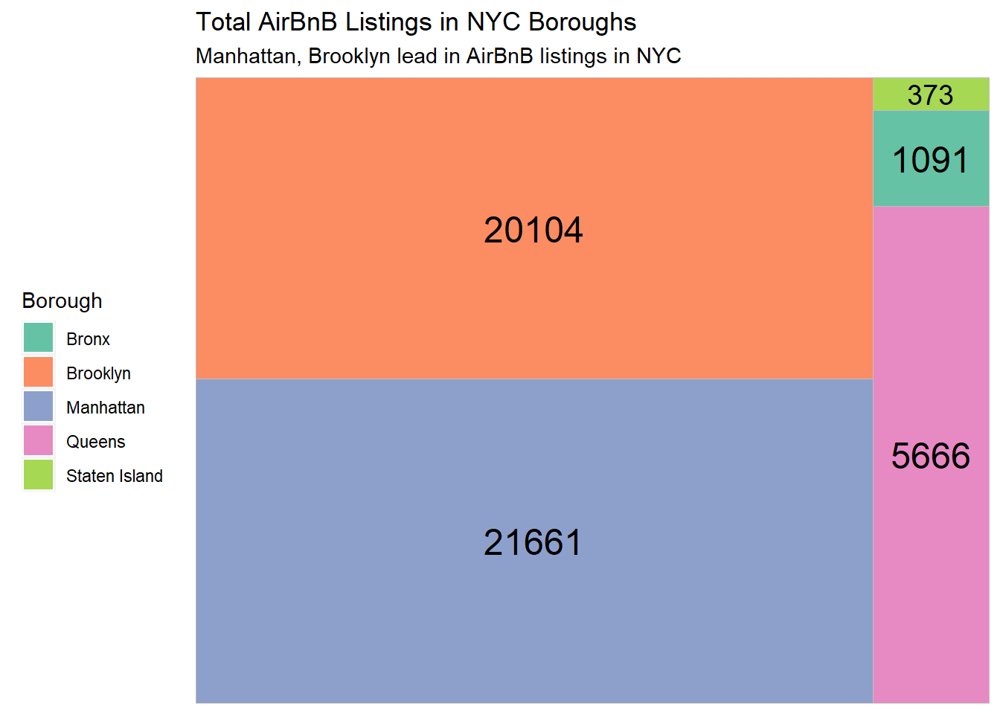
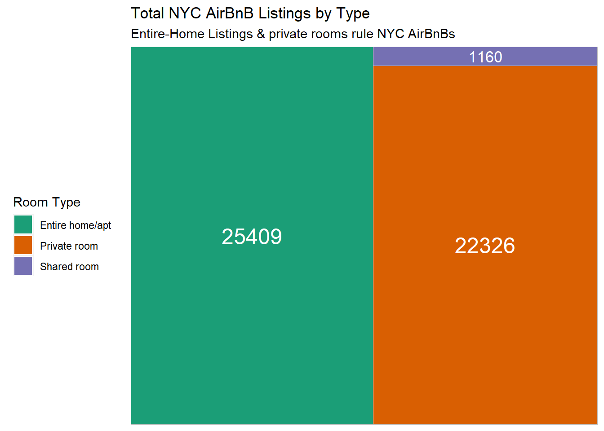
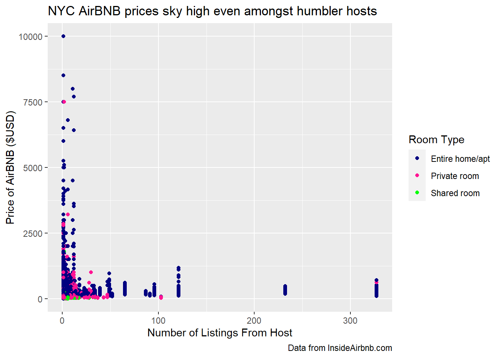
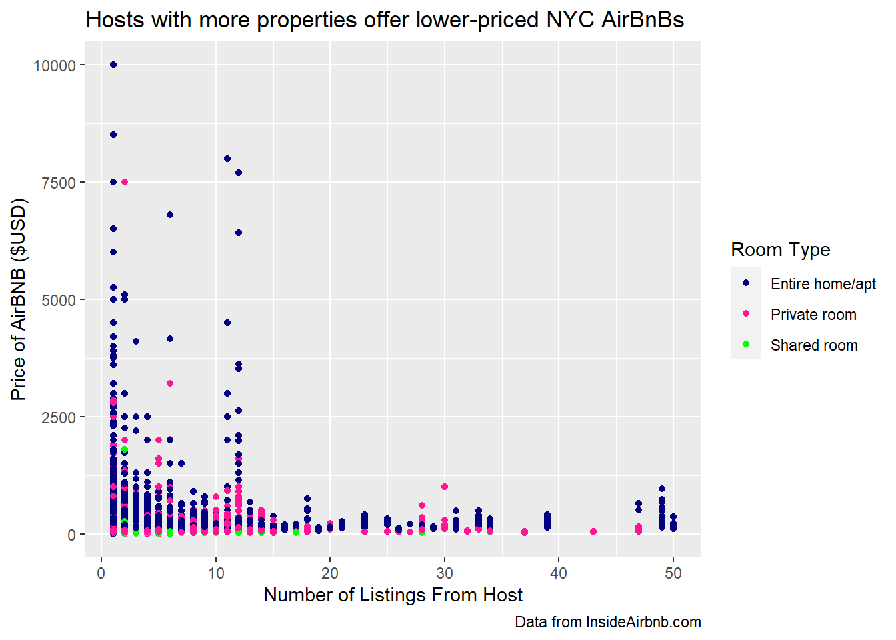
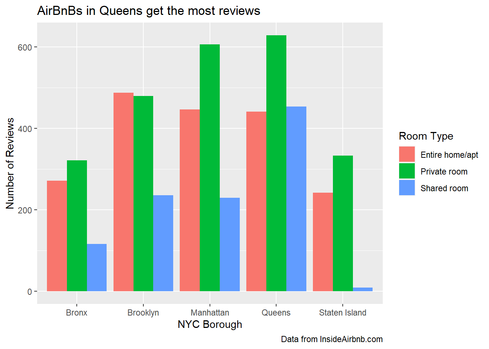

library(tidyverse)
library(ggplot2)
library(readr)
library(dplyr)
knitr::opts_chunk$set(echo = TRUE, warning=FALSE, message=FALSE)Challenge 7: AirBnB Visualizations
challenge_7
Teresa Lardo
air_bnb
Visualizing Multiple Dimensions
Read in data
Let’s read in the .csv for the AirBnB dataset for this challenge.
AB_NYC_2019 <- read_csv("_data/AB_NYC_2019.csv", show_col_types = FALSE)Briefly describe the data
dim(AB_NYC_2019)[1] 48895 16head(AB_NYC_2019)# A tibble: 6 × 16
id name host_id host_name neighbourhood_group neighbourhood latitude
<dbl> <chr> <dbl> <chr> <chr> <chr> <dbl>
1 2539 Clean & qu… 2787 John Brooklyn Kensington 40.6
2 2595 Skylit Mid… 2845 Jennifer Manhattan Midtown 40.8
3 3647 THE VILLAG… 4632 Elisabeth Manhattan Harlem 40.8
4 3831 Cozy Entir… 4869 LisaRoxa… Brooklyn Clinton Hill 40.7
5 5022 Entire Apt… 7192 Laura Manhattan East Harlem 40.8
6 5099 Large Cozy… 7322 Chris Manhattan Murray Hill 40.7
# ℹ 9 more variables: longitude <dbl>, room_type <chr>, price <dbl>,
# minimum_nights <dbl>, number_of_reviews <dbl>, last_review <date>,
# reviews_per_month <dbl>, calculated_host_listings_count <dbl>,
# availability_365 <dbl>colnames(AB_NYC_2019) [1] "id" "name"
[3] "host_id" "host_name"
[5] "neighbourhood_group" "neighbourhood"
[7] "latitude" "longitude"
[9] "room_type" "price"
[11] "minimum_nights" "number_of_reviews"
[13] "last_review" "reviews_per_month"
[15] "calculated_host_listings_count" "availability_365" unique(AB_NYC_2019$neighbourhood_group)[1] "Brooklyn" "Manhattan" "Queens" "Staten Island"
[5] "Bronx" unique(AB_NYC_2019$room_type)[1] "Private room" "Entire home/apt" "Shared room" This data set describes almost 49,000 AirBNB listings in the New York City area during the year 2019. Each listing includes the following information:
- Name & ID of the listing,
- Host name & ID, as well as number of listings associated with that host,
- Location information: neighborhood group (borough), specific neighborhood, latitude, longitude,
- Type of room (i.e., private room, shared room, entire home),
- Minimum length of stay in nights, price, and availability year-round, and
- Number of reviews, reviews per month, and most recent review for that listing.
Exploratory visualizations
Before I create my multi-dimensional visualizations, I want to explore a few aspects of the data through one-dimensional visuals. I’m interested in seeing the relative number of AirBnB listings by borough. I will create a treemap to show the relative proportions of AirBnB offerings for each borough.
# Package
library(treemapify)
library(RColorBrewer)
# Plot
ggplot(AB_NYC_2019 %>%
count(neighbourhood_group),
aes(fill = neighbourhood_group,
area = n,
label = n)) +
geom_treemap() +
geom_treemap_text(colour = "black",
place = "centre") +
labs(title = "Total AirBnB Listings in NYC Boroughs",
subtitle = "Manhattan, Brooklyn lead in AirBnB listings in NYC",
fill = "Borough") +
theme(legend.position = "left") +
scale_fill_brewer(palette = "Set2")
The treemap above shows that Staten Island has the least AirBnB listings in the 2019 data set by far. Manhattan and Brooklyn take the largest - and almost equal - number of listings.
I also want to see the distribution of the 3 different room types. I will use another treemap, since I’m looking for a similar type of information.
ggplot(AB_NYC_2019 %>%
count(room_type),
aes(fill = room_type,
area = n,
label = n)) +
geom_treemap() +
geom_treemap_text(colour = "white",
place = "centre") +
labs(title = "Total NYC AirBnB Listings by Type",
subtitle = "Entire-Home Listings & private rooms rule NYC AirBnBs",
fill = "Room Type") +
theme(legend.position = "left") +
scale_fill_brewer(palette = "Dark2")
This treemap shows how few Shared Room types of AirBnBs are represented in the 2019 NYC data. Entire-home AirBnBs are the most common type, but there are also many private rooms.
Visualization with Multiple Dimensions
Price By Room Type
I’m curious about how the AirBnBs are generally priced by hosts who have different numbers of total listings. I’m also interested in distinguishing the different room types to see if certain types of rooms tend to be cheaper or more expensive overall. I will use a simple scatterplot where each listing is set to a particular color based on its room type.
ggplot(AB_NYC_2019, aes(x=calculated_host_listings_count, y=price)) +
geom_point(aes(color=room_type)) +
labs(
title = "NYC AirBNB prices sky high even amongst humbler hosts",
x = "Number of Listings From Host",
y = "Price of AirBNB ($USD)",
caption = "Data from InsideAirbnb.com",
color = "Room Type") +
scale_color_manual(values=c("navy", "deeppink", "green")) 
From this visualization, I can see that most of the listings in our set are run by hosts who have fewer than 50 total listings. Even among the listings from the humbler hosts who only offer a single room, the price can be very high. I can also see that Shared Rooms are less represented in the data set than the other two room types.
I’d like to “zoom in” on this graph to focus on the listings for hosts with 50 or fewer AirBnB properties:
ggplot(AB_NYC_2019 %>%
filter(calculated_host_listings_count <= 50), aes(x=calculated_host_listings_count, y=price)) +
geom_point(aes(color=room_type)) +
labs(
title = "Hosts with more properties offer lower-priced NYC AirBnBs",
x = "Number of Listings From Host",
y = "Price of AirBNB ($USD)",
caption = "Data from InsideAirbnb.com",
color = "Room Type") +
scale_color_manual(values=c("navy", "deeppink", "green")) 
Reviews by Boroughs
Which borough and room type gets the most conversation on AirBnB? I will use a bar chart to separate our data first by borough and then separate the borough data into the 3 different room types.
ggplot(AB_NYC_2019, aes(fill=room_type, x=neighbourhood_group, y=number_of_reviews)) +
geom_bar(position="dodge", stat = "identity") +
labs(
title = "AirBnBs in Queens get the most reviews",
x = "NYC Borough",
y = "Number of Reviews",
fill = "Room Type",
caption = "Data from InsideAirbnb.com"
) 
This visualization shows that, regardless of borough, private rooms tend to receive the most reviews. The only borough where private room reviews do not top the other room types is Brooklyn, where Entire Home-style AirBnBs just barely take the top spot of total reviews. Overall, private rooms in Queens garner the most reviews, with private rooms in Manhattan pulling in a close second. Shared rooms in Staten Island get the least reviews, which makes sense as Staten Island is the borough with the least AirBnB listings by far, and shared rooms are the least represented type of AirBnB offerings.